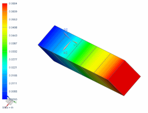

Display the axial displacement after unloading
Display the axial displacement at the end of the unloading subcase.
 Post-Processing Navigator
Post-Processing Navigator
-

 Removing Loads (expand, if necessary)
Removing Loads (expand, if necessary)
-
Displacement - Nodal (expand)
-
 Y
Y

The axial displacement of the free end is identical to the hand-calculated value.